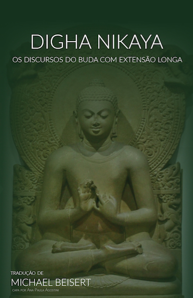
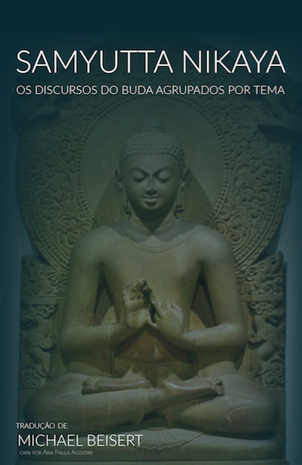
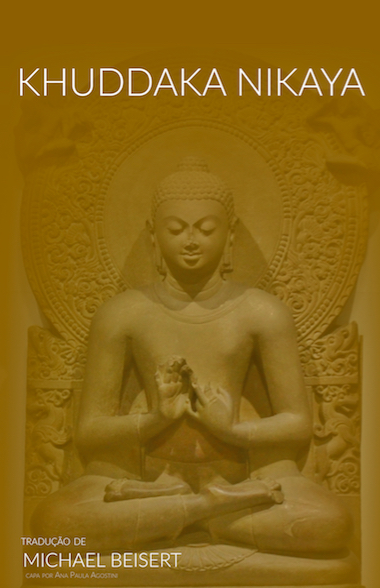
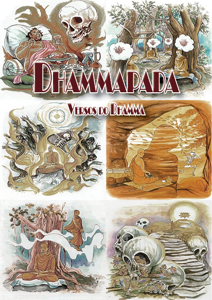

N I K A Y A S
Passe o mouse
na capa do livro

Foto da Capa: Museu de Sarnath, Benares, Índia.
O Digha Nikaya (DN) é a primeira coleção de suttas encontrada no Sutta Pitaka. O seu título significa literalmente a Coleção Longa e é assim chamada porque os suttas nela contidos são em geral de tamanho longo quando comparados com as outras coleções de suttas ou Nikayas. Em geral a palavra sutta é traduzida como discurso, mas no contexto do Digha Nikaya muitos discursos se aproximam mais de histórias contadas na maioria dos casos pelo Buda.
O DN é composto de 34 suttas divididos em três partes. O DN é largamente governado pelo objetivo de propagar o Budismo no seu meio cultural. Seus suttas tentam estabelecer a supremacia do Buda e do seu Dhamma sobre os seus concorrentes no cenário religioso e social indiano. Assim, o primeiro sutta do DN analisa as visões filosóficas que o Buda categoricamente rejeitava, o segundo repudia os ensinamentos de seis professores contemporâneos, enquanto muitos dos textos seguintes colocam o Buda em debate contra os Brâmanes e os membros de outras seitas; outros suttas servem o propósito de glorificar o Buda e demonstrar a sua superioridade sobre os deuses, os espíritos da natureza e os ascetas e contemplativos que perambulavam ao longo da planície do Ganges.
Baixe grátis em PDF ou ePub ou Mobi ou AZW3

Foto da Capa: Museu de Sarnath, Benares, Índia.
O Samyutta Nikaya (SN) é a terceira coleção de suttas encontrada no Sutta Pitaka. O seu título significa literalmente Discursos Agrupados por Temas. Os suttas estão agrupados em 5 livros ou seções (Vaggas), sendo que os Vaggas estão divididos em 56 capítulos (samyuttas). O SN contém 2.904 suttas dos quais 1.071 foram traduzidos para o Português, sendo que todos os suttas dos 3 principais samyuttas foram traduzidos: Nidana-samyutta, Khandha-samyutta, Salayatana-samyutta.
Como regra geral os suttas do SN não seriam destinados às pessoas de fora da Sangha ou mesmo aos recém-conversos, mas direcionados aos que já haviam buscado refúgio no Dhamma e se encontravam profundamente imersos no seu estudo e prática.
Com base no seu arranjo temático o SN foi compilado para servir como o repositório dos suttas muito curtos e concisos que revelam os insights radicais do Buda quanto à natureza da realidade e o seu caminho único para a emancipação espiritual. Esta coleção teria atendido às necessidades de dois tipos de discípulos dentro da comunidade monástica.
Primeiro, os especialistas doutrinários, aqueles monges e monjas que eram capazes de compreender as dimensões mais profundas da sabedoria e que tomaram para si a tarefa de esclarecer para os outros os muitos suttas com nuances abstrusas, profundas e delicadas, relacionados a tópicos de peso como a origem dependente, os cinco agregados, as seis bases sensuais, os fatores do caminho e as Quatro Nobres Verdades. Esta coleção seria perfeitamente adequada para aqueles discípulos com inclinação intelectual, que se deliciariam com a exploração das profundas implicações do Dhamma e com o trabalho de explicá-las para os companheiros no caminho espiritual.
O segundo tipo de discípulos, aos quais o SN parece ter sido designado, eram aqueles monges e monjas que já haviam realizado os estágios preliminares do treinamento meditativo e que tinham a intenção de aperfeiçoar os seus esforços com a realização direta da verdade suprema. Como os suttas nesta coleção têm uma importância vital para os meditadores inclinados a realizar o “conhecimento das coisas como elas na verdade são,” eles poderiam muito bem ter constituído o corpo principal de um currículo de estudo compilado para guiar os meditadores na prática do insight.
Baixe grátis em PDF ou ePub ou Mobi ou AZW3

Foto da Capa: Museu de Sarnath, Benares, Índia.
O Angulara Nikaya (AN) é a quarta coleção de suttas encontrada no Sutta Pitaka. O seu título significa literalmente Discursos Fatorados mais Além. Os suttas estão agrupados em onze nipatas de acordo com o número de itens do Dhamma cobertos pelo sutta.
O AN contém suttas curtos cuja principal preocupação é prática. O AN trata a prática sob uma perspectiva ampla variando das observâncias éticas básicas recomendadas para o leigo ocupado, através dos pilares do treinamento da mente, para as mais elevadas realizações meditativas, como o samadhi ou jhanas.
Muitos discursos lidam com a aplicação da prática do Dhamma para a vida no mundo, oferecendo orientação para as relações familiares, de amizade, modo de vida correto, o uso da riqueza, harmonia comunitária e os deveres do governante para com os seus súditos. Por todas estas razões, o AN, mais do que os outros Nikayas, serviu durante séculos como o canal pelo qual os ensinamentos do Buda foram transmitidos para as populações nos países Budistas Theravada do sul da Ásia.
Baixe grátis em PDF ou ePub ou Mobi ou AZW3

Foto da Capa: Museu de Sarnath, Benares, Índia.
A “Divisão dos Livros Curtos” (Pali khudda = "menor,"), consistindo de 15 "livros", (18 na Birmanesa), incluindo o Udana, Itivuttaka, Sutta Nipata.
O Udana contém 80 suttas sendo que todos foram traduzidos para o Português. O Itivuttaka contém 112 suttas sendo que todos foram traduzidos e o Sutta Nipata contém 71 suttas dos quais 44 foram traduzidos.
Baixe grátis em PDF ou ePub ou Mobi ou AZW3

Versos do Dhamma. Desde tempos remotos até os dias de hoje o Dhammapada tem sido considerado como a expressão mais sucinta dos ensinamentos do Buda encontrados no Cânone em Pali. Nos países do Budismo Theravada a influência do Dhammapada está em todos os lugares. É uma fonte fecunda para sermões e discussões, um guia para resolver os incontáveis problemas da vida do dia a dia, uma cartilha para a instrução de noviços nos monastérios.
Agradecimentos ao Marcus Vinícius Marin Leite pela composição deste livro.
Baixe grátis em PDF
Leia sobre a política de preços dos Livros
Revisado: 1 Fevereiro 2018
Copyright © 2000 - 2019, Acesso ao Insight - Michael Beisert: editor, Flavio Maia: designer.